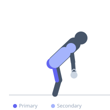
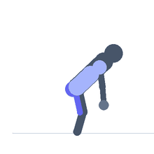

Exercise guide / Single-Arm Kettlebell Swing
Single-Arm Kettlebell Swing
The single-arm kettlebell swing applies the hip hinge mechanics of the two-handed swing to one arm, which introduces an anti-rotation challenge for the core and demands greater grip strength. The free arm can be used as a counterbalance or held at the side. Training one arm at a time addresses left-right imbalances and builds rotational core stability that bilateral swings cannot replicate.
Primary muscles
gluteus maximus
biceps femoris long head
Secondary muscles
erector spinae
deltoid anterior
Stabilizers
transverse abdominis
gluteus medius
Equipment
Kettlebell


Starting position
- Stand with feet hip-width, kettlebell between feet. Hinge at the hips and grasp the handle with one hand.
Setup
- Master two-handed swings before moving to single-arm. Use the same weight or slightly less than your two-handed swing.
Steps
- Step 1: Hike the kettlebell back between the legs as in a standard swing.
- Step 2: Drive the hips forward explosively, swinging the kettlebell to shoulder height.
- Step 3: Keep the free arm swinging naturally as a counterbalance — it can swing opposite the kettlebell.
- Step 4: Control the bell back between the legs and repeat for reps, then switch sides.
Coaching cues
- Hips drive the bell — not the arm
- Stay square to the front
- Soft knees on the downswing
Breathing
- Exhale sharply at the hip snap, inhale on the downswing.
Range of motion
- Hip hinge to full hip extension with bell at shoulder height.
Tempo
- Ballistic — controlled descent
Common mistakes
- Rotating the torso toward the working arm
- Letting the shoulder shrug upward at the top
- Leaning to one side
Safety
- Keep the spine neutral — resist torso rotation
- Build up gradually — the unilateral demand is high
Training
- power: 5–10 reps
- endurance: 10–20 reps
- power: 3–5 sets
- endurance: 3–4 sets
- Rest: {'strength': 120, 'hypertrophy': 60, 'endurance': 30}